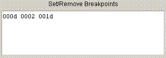

Running the Simulator
Program Operation
... Overview
... ... Running the Simulator
Mic-1 MMVallows you to observe the interpretation of an IJVM program by a microprogram. In this example, we use the internal JAS assembler to
produce an IJVM program from source code and execute that program on
the Simulator.
Assemble and Load echo.jas
- Launch the simulator
- Select File | Assemble / Load JAS file .... Navigate to
the file echo.jas and select it.
- Continue as described in Writing JAS Programs until echo.ijvm is loaded.
Execute echo.ijvm
The Simulator can be run at different speeds in order to observe the
execution of echo.ijvm at different levels of granularity. The
meaning of "step" depends on the selected speed, as described
below. A forward step occurs for each click of the  button. A
reverse step (undoing the last action) occurs for each click of the
button. A
reverse step (undoing the last action) occurs for each click of the
 button.
button. - Subclock speed
- Each step corresponds to 1/4 of a microinstruction cycle. This speed
is appropriate for observing the movement of data in the Architecture
View.
- Clock speed
- Each step corresponds to one microinstruction cycle. If Delay is
selected, data movement through the Architecture View will be shown.
- IJVM speed
- Each step corresponds to the execution of one IJVM instruction. If Delay is
selected, data movement through the Architecture View will be shown.
- Prog speed
- Clicking the Step button causes the IJVM program to run to completion. The Stop button (
 ) can be used to suspend execution. If Delay is
selected, execution of individual microinstructions will be shown.
) can be used to suspend execution. If Delay is
selected, execution of individual microinstructions will be shown.
All input and output respectively use the Input and Output Consoles.
Note: the Reset button (  ) can be used to restart the Simulator
at any time. On reset the registers and memory return to their
initial conditions. It is advisable to reset after changing speeds.
) can be used to restart the Simulator
at any time. On reset the registers and memory return to their
initial conditions. It is advisable to reset after changing speeds.
Setting Breakpoints
- Breakpoints in the Method Area are set in the Preference panel (see
Setting Preferences). Use Preferences | Edit
Preferences ... to bring up the Preference panel.
- Enter Method Area breakpoint addresses (in hexadecimal) separated by whitespace, into the breakpoint window as shown below:

- Close the Preference panel. The entries in the Method
Area corresponding to breakpoints should be in blue.
- Run at Prog speed. The simulator will stop whenever it
encounters a breakpoint.
- You may re-edit the breakpoint window at any time.
It is advisable to reset after changing breakpoints.